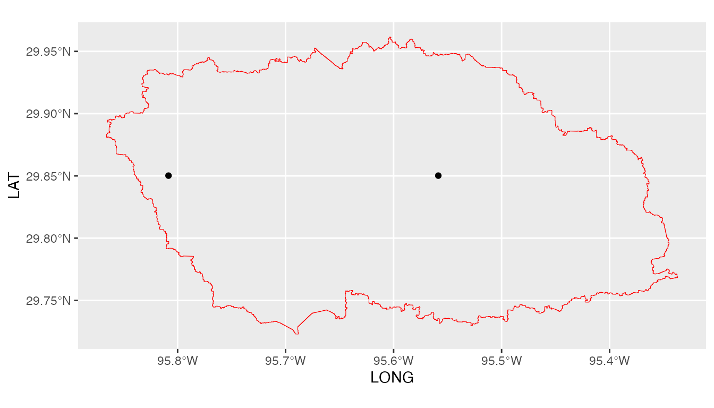
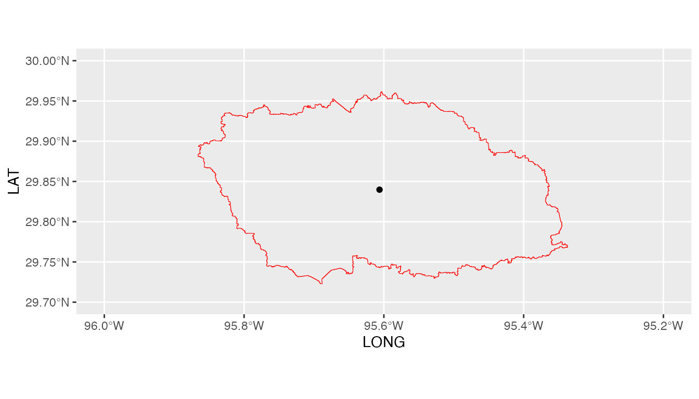

Getting started with GLDAS data
Ibrahim N. Mohammed
2026-02-25
Source:vignettes/GLDAS.Rmd
GLDAS.RmdNASAaccess package has multiple functions such as
GLDASwat and GLDASpolyCentroid that download,
extract, and reformat air temperature data (‘Tair_f_inst’) of GLDAS from NASA servers for grids
within a specified watershed shapefile. The
GLDASpolyCentroid and GLDASswat find the
minimum and maximum air temperatures for each day at each grid within
the study watershed by searching for minima and maxima over the three
hours air temperature data values available for each day and grid. The
GLDASwat and GLDASpolyCentroid functions
output gridded air temperature (maximum and minimum) data in degrees
‘C’.
Let’s explore GLDASpolyCentroid and
GLDASswat functions.
Basic use
Let’s use the example watersheds that we introduced with
GPMswat and GPMpolyCentroid. Please visit
NASAaccess GPM functions for more
information.
#Reading input data
dem_path <- system.file("extdata",
"DEM_TX.tif",
package = "NASAaccess")
shape_path <- system.file("extdata",
"basin.shp",
package = "NASAaccess")
library(NASAaccess)
GLDASwat(Dir = "./GLDASwat/",
watershed = shape_path,
DEM = dem_path,
start = "2020-08-1",
end = "2020-08-3")Let’s examine the air temperature station file
GLDASwat.tempMaster <- system.file('extdata/GLDASwat',
'temp_Master.txt',
package = 'NASAaccess')
GLDASwat.table<-read.csv(GLDASwat.tempMaster)
head(GLDASwat.table)
#> ID NAME LAT LONG ELEVATION
#> 1 345937 temp345937 29.85021 -95.80842 46.64194
#> 2 345938 temp345938 29.85021 -95.55859 30.55108
dim(GLDASwat.table)
#> [1] 2 5GLDASwat generated ascii table for each available grid
located within the study watershed. GLDASwat also generated
the air temperature stations file input shown above
GLDASwat.table (table with columns: ID, File NAME, LAT, LONG,
and ELEVATION) for those selected grids that fall within the specified
watershed. The GLDAS dataset
used here is the GLDAS
Noah Land Surface Model L4 3 hourly 0.25 x 0.25 degree V2.1.
Now, let’s see the location of the GLDASwat generated
grid points
library(ggplot2)
library(tidyterra)
#>
#> Attaching package: 'tidyterra'
#> The following object is masked from 'package:stats':
#>
#> filter
ggplot(shape) +
geom_spatvector(color='red',fill=NA) +
geom_point(data=GLDASwat.table,aes(x=LONG,y=LAT))
We note here that GLDASwat has given us all the GLDAS
data grids that fall within the boundaries of the White Oak Bayou study
watershed.
The time series air temperature data stored in the data tables (i.e., 2 tables) can be viewed also. looking at air temperature reformatted data from the first grid point as listed in the air temperature station file is by
GLDASwat.point.data <- system.file('extdata/GLDASwat',
'temp345937.txt',
package = 'NASAaccess')
#Reading data records
read.csv(GLDASwat.point.data)
#> X20200801
#> 32.1672399902343 23.28843
#> 33.0642431640625 22.76880
#> 33.7442358398437 22.91977The time series air temperature data has been written in a format that gives daily maximum and minimum air temperature in degrees ‘C’.
Now, let’s examine GPMpolyCentroid.
Using the watershed example:
GLDASpolyCentroid(Dir = "./GLDASpolyCentroid/",
watershed = shape_path,
DEM = dem_path,
start = "2018-08-1",
end = "2018-08-3")Now let’s examine the GLDASpolyCentroid generated
outputs
library(ggplot2)
library(tidyterra)
GLDASpolyCentroid.tempMaster <- system.file('extdata/GLDASpolyCentroid',
'temp_Master.txt',
package = 'NASAaccess')
GLDASpolyCentroid.table<-read.csv(GLDASpolyCentroid.tempMaster)
#plot
ggplot(shape) +
geom_spatvector(color='red',fill=NA) +
geom_point(data=GLDASpolyCentroid.table,
aes(x=LONG,y=LAT)) +
coord_sf(xlim=c(-96,-95.2),ylim=c(29.7,30))
We note here that GLDASpolyCentroid has given us the GLDAS
data grid that fall within our specified watershed and assigns a pseudo
air temperature gauge located at the centroid of the watershed a
weighted-average daily maximum and minimum air temperature data.
Built with
sessionInfo()
#> R version 4.5.2 (2025-10-31)
#> Platform: aarch64-apple-darwin20
#> Running under: macOS Tahoe 26.3
#>
#> Matrix products: default
#> BLAS: /System/Library/Frameworks/Accelerate.framework/Versions/A/Frameworks/vecLib.framework/Versions/A/libBLAS.dylib
#> LAPACK: /Library/Frameworks/R.framework/Versions/4.5-arm64/Resources/lib/libRlapack.dylib; LAPACK version 3.12.1
#>
#> locale:
#> [1] en_US.UTF-8/en_US.UTF-8/en_US.UTF-8/C/en_US.UTF-8/en_US.UTF-8
#>
#> time zone: Asia/Dubai
#> tzcode source: internal
#>
#> attached base packages:
#> [1] stats graphics grDevices utils datasets methods base
#>
#> other attached packages:
#> [1] tidyterra_1.0.0 ggplot2_4.0.2 terra_1.8-93
#>
#> loaded via a namespace (and not attached):
#> [1] sass_0.4.10 generics_0.1.4 tidyr_1.3.2 class_7.3-23
#> [5] KernSmooth_2.23-26 digest_0.6.39 magrittr_2.0.4 evaluate_1.0.5
#> [9] grid_4.5.2 RColorBrewer_1.1-3 fastmap_1.2.0 jsonlite_2.0.0
#> [13] e1071_1.7-17 DBI_1.2.3 purrr_1.2.1 scales_1.4.0
#> [17] codetools_0.2-20 textshaping_1.0.4 jquerylib_0.1.4 cli_3.6.5
#> [21] rlang_1.1.7 units_1.0-0 withr_3.0.2 cachem_1.1.0
#> [25] yaml_2.3.12 otel_0.2.0 tools_4.5.2 dplyr_1.2.0
#> [29] vctrs_0.7.1 R6_2.6.1 proxy_0.4-29 lifecycle_1.0.5
#> [33] classInt_0.4-11 fs_1.6.6 htmlwidgets_1.6.4 ragg_1.5.0
#> [37] pkgconfig_2.0.3 desc_1.4.3 pkgdown_2.2.0 pillar_1.11.1
#> [41] bslib_0.10.0 gtable_0.3.6 glue_1.8.0 Rcpp_1.1.1
#> [45] sf_1.0-24 systemfonts_1.3.1 xfun_0.56 tibble_3.3.1
#> [49] tidyselect_1.2.1 rstudioapi_0.18.0 knitr_1.51 farver_2.1.2
#> [53] htmltools_0.5.9 rmarkdown_2.30 compiler_4.5.2 S7_0.2.1